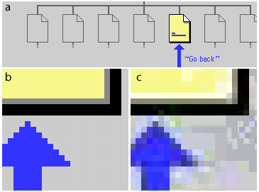

JPEG/PNG
Jonathan Fox
JPEG and PNG
- JPEG is the format of choice for photographic images, images with continous tone or images that require more than 256 colours.
- PNG also offers 24-bit colour and has other advantages over JPEG, notably transparency, but is not as widely supported by graphics software and browsers.
JPEG
When an image is converted to a JPEG the file is compressed. JPEG uses DCT (Discrete Cosine Transform) compression to reduce file size. This form of compression is based on the fact that the human eye is more sensitive to tonal changes in an image (brightness and contrast) than changes in colour. DCT compression splits colour and tonal information and compresses each separately.
JPEG
This means that:
- JPEG achieves greater compression on continuous tone images.
- Not good at compressing images with extreme changes of colour and hard edges.

JPEG
JPEG is 'lossy'. This means that:
- Information is lost in the conversion to JPEG.
- All subsequent saves will also lose information.
- It is, therefore, important to keep an original of any image you wish to edit in a 'non-lossy' file format.
Progressive JPEG
This variation of JPEG causes images to load into the Web page gradually rather than appearing only when the file is fully downloaded.
PNG
PNG supports:
- 24-bit colour
- 8-bit colour
- Lossless file compression
PNG
This means that:
- High colour images can be be saved as 24-bit.
- Images with fewer colours can be saved as 8-bit, making smaller files.
- Images can be saved and resaved in the PNG format without loss of quality.
PNG
Disadvantages:
- Only supported by IE v4 and Netscape v4.04 and later on the PC.
- Not supported by IE v4.5 and Netscape v4.04 and earlier on the Mac.